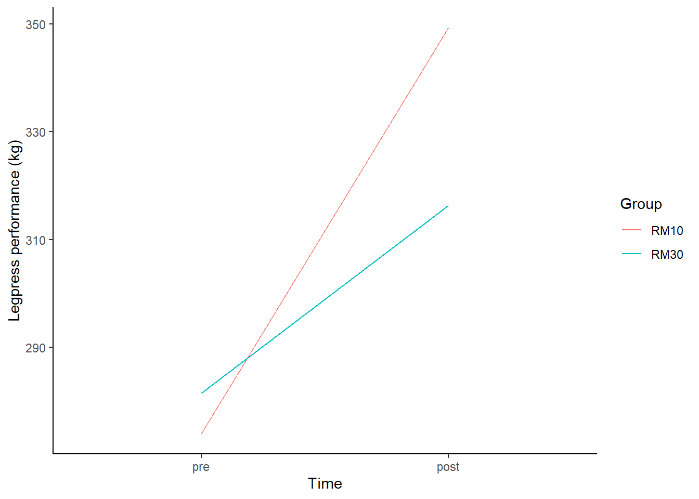

A regression model can be used to assess the differences between treatments in a randomized controlled trial (RCT). But what do we use as the dependent variable in this model?
Vickers (2001) identified and compared four scenarios that might be “tested” from a comparison of two groups:
Baseline (\(b\)), follow-up (\(f\)) and group (\(g\)) can be analyzed as
Post-scores only: \(f\) is compared between \(g\)
Percentage change: \(100 \times \frac{b-f}{b}\) is compared between \(g\)
Change: \(b-f\) compared between \(g\)
Analysis of co-variance (ANCOVA): \(g\) is compared as the effect in \(f=\beta_1 b + \beta_2 g\)
The choice of method should be based on its efficiency, the ability find true effects using a minimal number of participants.
Vickers show that the use of percentage change from baseline is inefficient (Vickers 2001) and could lead to violations of assumptions for statistical tests.
The ANCOVA model (see below) is the preferred model when model assumptions holds (Vickers 2001)
We will proceed with comparison of change-scores and later discuss ANCOVA.
Analysis of change scores
Code
library(tidyverse)data.frame(Time =c("Pre", "Post", "Pre", "Post"), outcome =c(0,1, 0,1)) %>%mutate(Time =factor(Time, levels =c("Pre", "Post"))) %>%ggplot(aes(Time, outcome)) +theme_classic() +ylab("Outcome") +theme(axis.text.y =element_blank()) +geom_segment(aes(x = Time, xend =2, y =c(0.5,0.5, 0.5,1.5), yend =c(0.5,0.5, 1.5,1.5))) +scale_y_continuous(limits =c(0,2)) +annotate(geom ="text", x =2.25, y =1.5, label ="Treatment") +annotate(geom ="text", x =2.25, y =0.5, label ="Control")
In a simple analysis of two parallel groups (experimental and control), the alternative hypothesis is that the two groups are different in terms of change scores.
The null-hypothesis that we use in our statistical models is
\[ \Delta Y_{Treatment}-\Delta Y_{Control} = 0 \]
In the simple case, this equals a t-test.
t.test(delta ~ group, paired = FALSE)
A similar scenario is a comparison between two treatments (A and B)
Code
data.frame(Time =c("Pre", "Post", "Pre", "Post"), outcome =c(0,1, 0,1)) %>%mutate(Time =factor(Time, levels =c("Pre", "Post"))) %>%ggplot(aes(Time, outcome)) +theme_classic() +ylab("Outcome") +theme(axis.text.y =element_blank()) +geom_segment(aes(x = Time, xend =2, y =c(0.5,0.5, 0.5,1.5), yend =c(1.1,0.5, 1.5,1.5))) +scale_y_continuous(limits =c(0,2)) +annotate(geom ="text", x =2.25, y =1.5, label ="A") +annotate(geom ="text", x =2.25, y =1.1, label ="B")

The null-hypothesis is that
\[ \Delta Y_{A}-\Delta Y_{B} = 0 \]
The tenthirty data set has similar data as in the above scenario
We want to know what treatment to recommend for 1RM improvements.
Group work: Ten-thirty
Using the tenthirty data, use filter to keep time-point “pre” and “post” for the leg-press exercise.
Make a plot of the averages of each group.
Calculate a change score as post - pre.
Make a plot of the average change score for each group.
Fit a regression model (change ~ group) and interpret the results.
Questions:
Concerning the sample: Which group has the largest improvement i leg-press 1RM?
Concerning inference to the population: Which method do you recommend for improving 1RM leg-press?
Possible solutions
## Create a plot of averages over time ----------- ##library(tidyverse); library(exscidata)data("tenthirty")# Save the data set in a filtered versiontenthirty_reduced <- tenthirty %>%filter(time %in%c("pre", "post"), exercise =="legpress", !is.na(load)) %>%print()# Create a line plot with one line per grouptenthirty_reduced %>%group_by(time, group) %>%summarise(m =mean(load)) %>%mutate(time =factor(time, levels =c("pre", "post"))) %>%ggplot(aes(time, m, color = group, group = group)) +geom_line()# Create a plot of average changes per grouptenthirty_reduced %>%pivot_wider(names_from = time, values_from = load) %>%mutate(change = post - pre) %>%group_by(group) %>%summarise(mean_change =mean(change, na.rm =TRUE)) %>%ggplot(aes(group, mean_change, fill = group)) +geom_bar(stat ="identity", width =0.3)# Calculate the average change per group, and difference between groupstenthirty_reduced %>%pivot_wider(names_from = time, values_from = load) %>%mutate(change = post - pre) %>%group_by(group) %>%summarise(mean_change =mean(change, na.rm =TRUE)) %>%pivot_wider(names_from = group, values_from = mean_change) %>%mutate(diff = RM30 - RM10) %>%print()# Calculate change score and save new data setdat <- tenthirty_reduced %>%pivot_wider(names_from = time, values_from = load) %>%mutate(change = post - pre) %>%print()# Fit model with change scores explained by groupm1 <-lm(change ~ group, data = dat)# Get the model summarysummary(m1)
Code
library(exscidata)tenthirty %>%filter(exercise =="legpress", time %in%c("pre", "post")) %>%mutate(time =factor(time, levels =c("pre", "post"))) %>%group_by(time, group) %>%summarise(m =mean(load, na.rm =TRUE)) %>%ggplot(aes(time, m, group = group, color = group)) +geom_line() +labs(x ="Time", y ="Legpress performance (kg)", color ="Group") +theme_classic()
Group averages over time
From t-test to ANCOVA
Above we used the simple comparison of change score. A more appropriate model to study outcomes of a RCT is an analysis of co-variance (ANCOVA)
In an ANCOVA, change-scores or post values are compared and the estimates tells you the adjusted differences between groups if they had the exact same starting point.
The ANCOVA model can be written as
\[f =\beta_0 + \beta_1\times b + \beta_2\times g \]
where \(f\) is the follow-up score, \(b\) is the baseline and \(g\) is the group.
In R code, this corresponds to
post ~ pre + group
Group work: Ten-thirty ANCOVA
Fit an ANCOVA model with change scores as the dependent variable (m1)
Fit an ANCOVA model with the post values as the dependent variable (m2)
Pre-training values and group should be covariates in both models.
Use the aov command to fit an ANOVA model (m3)
Evaluate models using summary and anova
Questions
Concerning inference to the population: Which method do you recommend for improving 1RM leg-press?
In what ways are the models different?
What is happening with the aov command, how is it different to m2?
Possible solutions
# Create a data set with changedat <- tenthirty %>%filter(exercise =="legpress", time %in%c("pre", "post")) %>%pivot_wider(names_from = time, values_from = load) %>%mutate(change = post - pre, pre = pre -mean(pre)) %>%# Mean center pre-valuesprint()# Fit models m1 <-lm(post ~ pre + group, data = dat)m2 <-lm(change ~ pre + group, data = dat)summary(m1)summary(m2)m3 <-aov(post ~ pre + group, data = dat)summary(m3)anova(m1)
Understanding the ANCOVA model
The ANCOVA estimates the difference between e.g. post scores given a (estimated) association between pre- and post-scores.
This can be visualized in a simple plot where the difference in the paralell lines are the treatment effect
Code
m1 <- tenthirty %>%filter(exercise =="legpress", time %in%c("pre", "post")) %>%pivot_wider(names_from ="time", values_from ="load") %>%mutate(change = post - pre) %>%lm(post ~ pre + group, data = .) tenthirty %>%filter(exercise =="legpress", time %in%c("pre", "post")) %>%pivot_wider(names_from ="time", values_from ="load") %>%ggplot(aes(pre, post, color = group)) +geom_point() +scale_color_manual(values =c("red", "blue")) +geom_abline(intercept =coef(m1)[1], slope =coef(m1)[2], color ="red") +geom_abline(intercept =coef(m1)[1] +coef(m1)[3], slope =coef(m1)[2], color ="blue") +labs(title ="Estimates from an ANCOVA model", subtitle ="post ~ pre + group", color ="Group") +theme_classic()
By correcting for baseline values we can expect different estimates for each group, notice also that the standard errors are changing
Code
library(emmeans)m0 <- tenthirty %>%filter(exercise =="legpress", time %in%c("pre", "post")) %>%pivot_wider(names_from ="time", values_from ="load") %>%mutate(change = post - pre) %>%lm(post ~ group, data = .) m2 <- tenthirty %>%filter(exercise =="legpress", time %in%c("pre", "post")) %>%pivot_wider(names_from ="time", values_from ="load") %>%mutate(change = post - pre) %>%lm(change ~ group, data = .) bind_rows(data.frame(emmeans(m0, specs =~ group)) %>%mutate(Model ="Post only"), data.frame(emmeans(m1, specs =~ group)) %>%mutate(Model ="ANCOVA")) %>%ggplot(aes(group, emmean, fill = Model)) +geom_errorbar(aes(ymin = emmean, ymax = emmean + SE), position =position_dodge(), width =0.5) +geom_bar(stat ="identity", position =position_dodge(), width =0.5)
Group estimates from two different models, error bars are standard errors (SE)
Calculating the differences between groups we can also see differences, here we also incorporate the change score model.